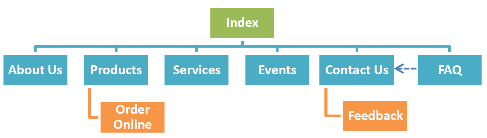

Name: Chelsea Chen Xi, Hyunjin Kim, Srishti Jindal (Group 10)
Login: jc342169, jc343368, jc347076
To increase the cafe's customer volume and revenue by giving customers a platform to learn more about the company and be updated on the current events and promotions.
We keep the other advertising methods at a constant so that any increase in customer volume and revenue can be attributed to the website.
Create feedback forms with a section asking if the customer is new to the cafe and another section on how they learned of the cafe. This can be given to customers along with their orders or handed out to participants during events.
The percentage of new customers who learned of the cafe through the website can then be compared with that of the repeat customers.
The greater the percentage calculated from the new customers compared to that of the repeat customers, the more successful the website is.
Young adults, teenagers and children (age range up to 30s).
The site will be made more visually appealing with more pictures, bright pastel colours and rounded edges to appeal to this age group.
Index
About Us
Services
Events
Contact Us

https://github.com/chelseacx/Diazepam-Cafe-Website